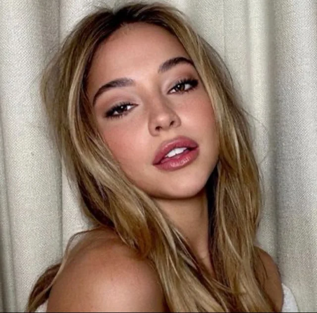
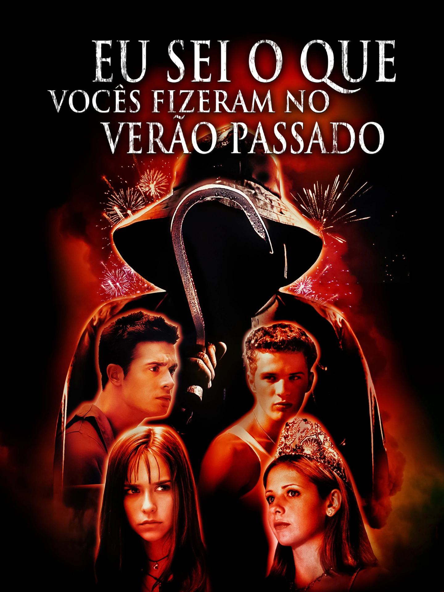
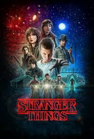
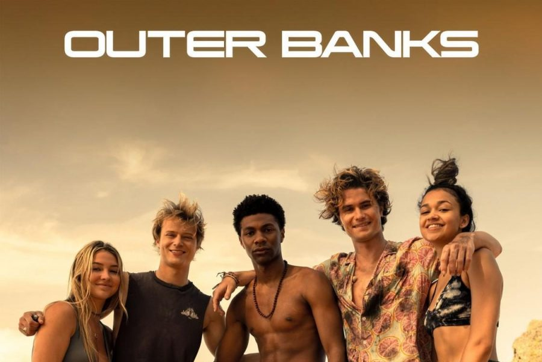

Meus projetos
Sobre mim

Filmes e Series
Atuações
filme e series que participei
Os originais

"Os Originais" é uma série spin-off de "Diários de um Vampiro" que acompanha a tragetória dos irmão Mikaelson Klaus, Elijah e Rebeca, os primeiros vampiros do mundo.
TrailerEu sei O Que Vocês Fizeram No Verão Passado

O filme de terror "Eu sei O Que Vocês Fizeram No Verão Passado" que será lançado nos cinemas ainda esse ano, é um remake do filme clássico, que foi lançado um 1997. Esse novo filme de 2025 ganhará um novo elenco e novas espectativas.
TrailerStranger thingss

A série da Netflix de terror e mistério "Stranger Things" conta a história de um mundo real e um mundo invertido, uma dimensão paralela cheia de criaturas horripilantes.
TrailerOuter Banks

A séria da Netflix "Outer Banks" acompanha um grupo de adolescentes que vivem numa ilha costeira da Carolina do Norte, a ilha sofre uma grande diferença de classes sociais, o e Pougues embarcam um perigosas aventura a fim de mudar de vida.
Trailer